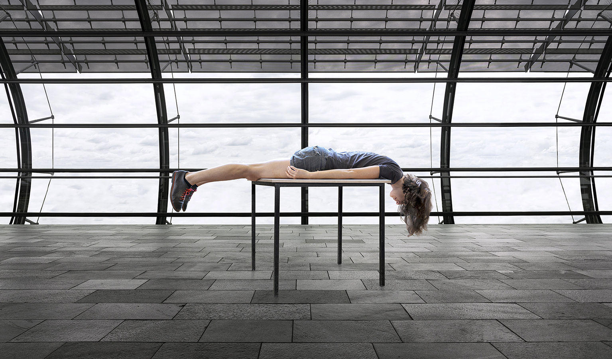
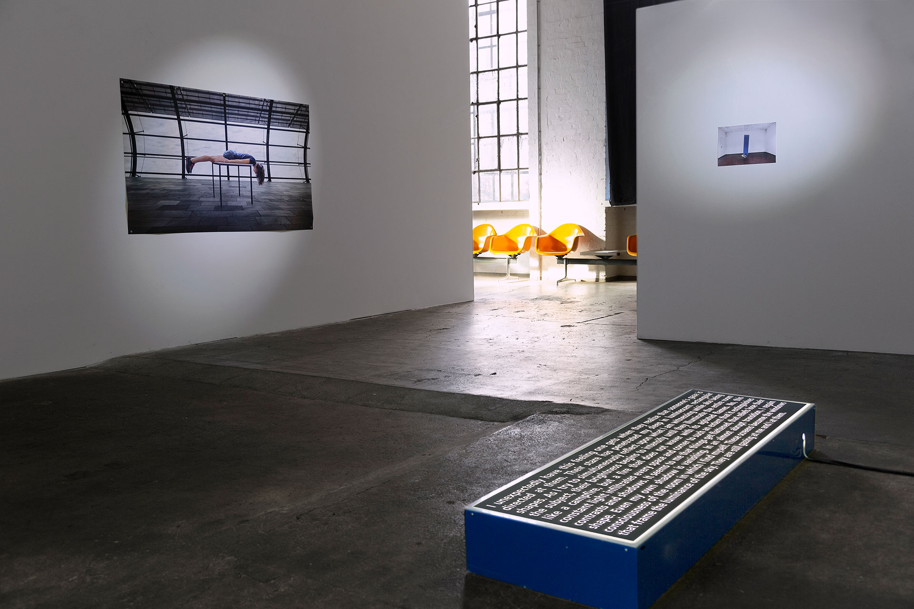
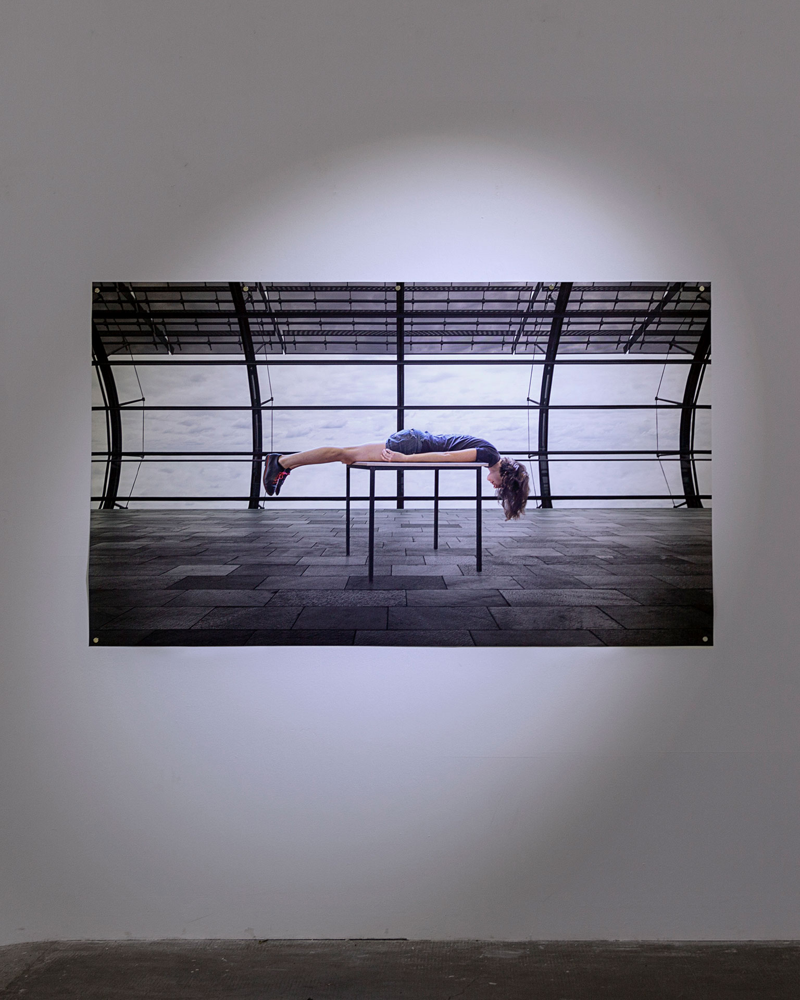
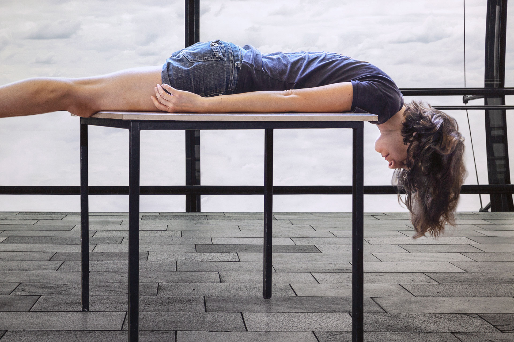
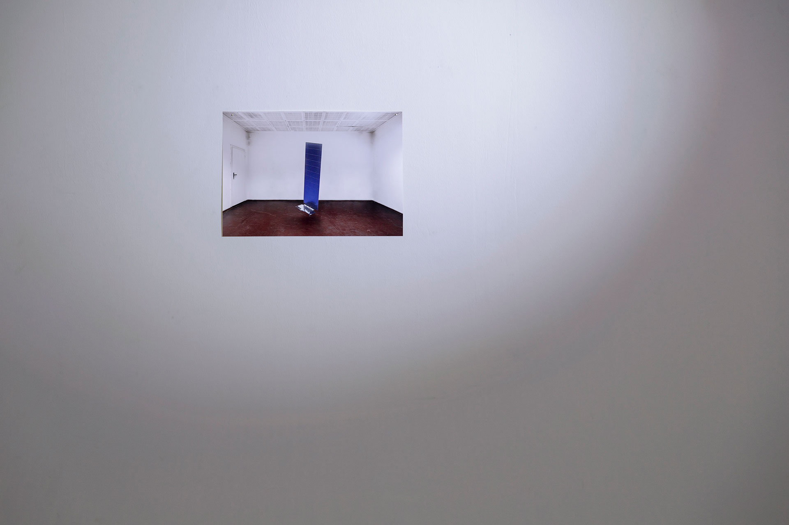
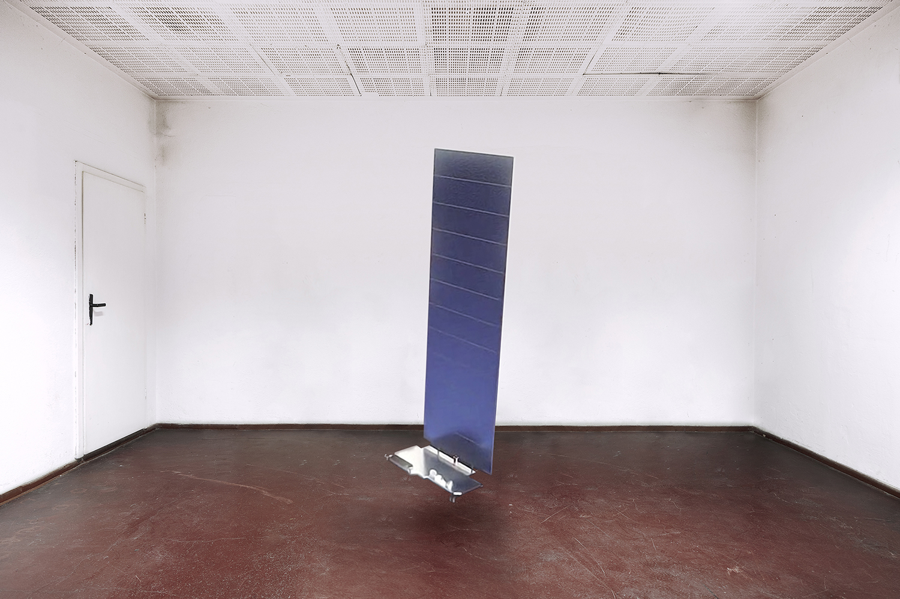
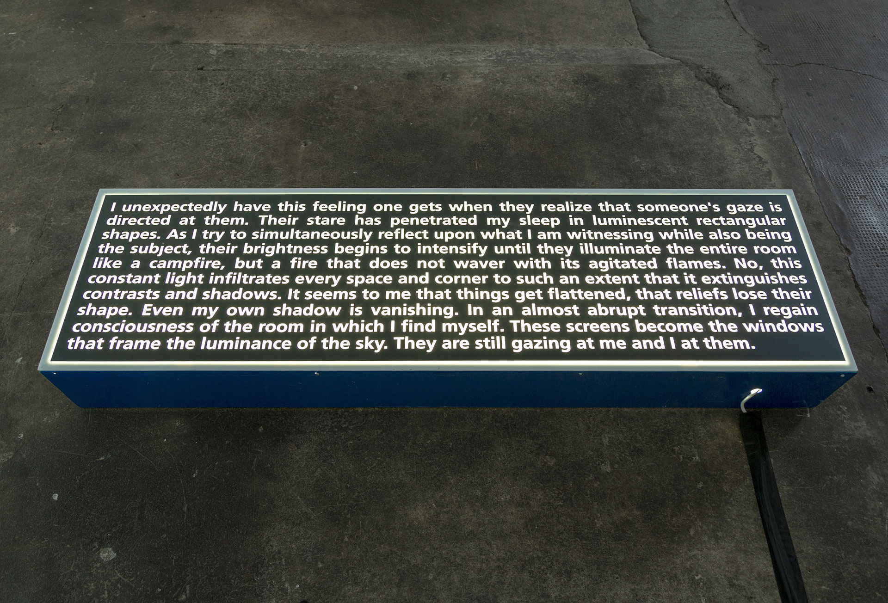
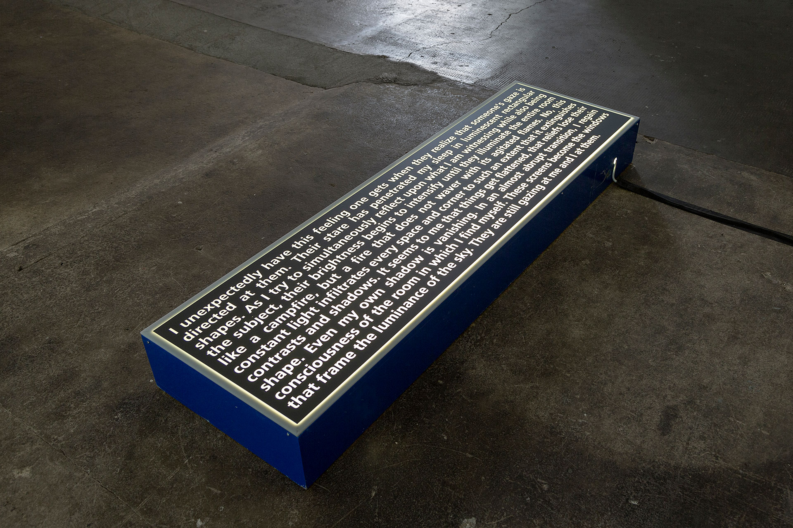
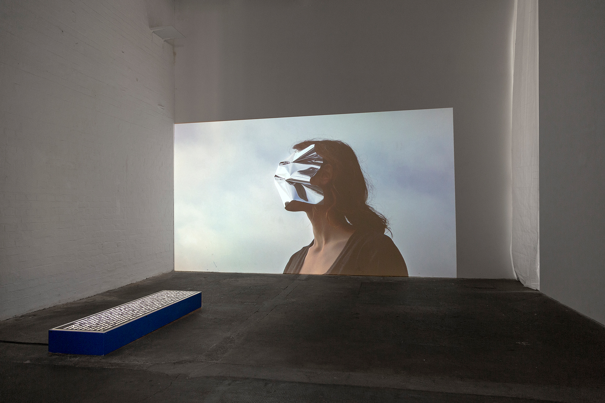

Jessica Arseneau









Nothing but a Constant Glow, solo exhibition views at Spinnerei Archiv Massiv, Leipzig
The exhibition Nothing but a Constant Glow brings together works with a poetic perspective on insomnia and an observation of a world in constant operation. A body is lying flat on a table in a non-place, reminding us that there are also non-times, a Starlink's satellite is installed in a brightly illuminated indoor space, a light box makes visible a text that describes a state of threshold between between unconsciousness and consciousness when one is solicited by everything that keeps one perpetually awake.
This exhibition consists of the inkjet print Standstill (2020), inkjet print Satellite (2020), light box Untitled (I unexpectedly have this feeling) (2020), and digital video Deflection (2020) from the series The Screen Under My Eyelids.
Thanks: Paula Abalos, Sabrina Asche, Isaak Broder, Andrea Garcia, Elizabeth Gerdeman, Adrian Kleinlosen, Florian Krahmer, Mario Kühne, Judith Lavagna, Fabian Lehmann, Marie-Eve Levasseur, Michael Ludwig, Nico Nice, Sarah Pschorn, Robert Raithel, Ilona Schaal, Aaron Shoichet and Simon Thiou.
The creation of the works Standstill, Satellite, Untitled (I unexpectedly have this feeling), and the exhibition Nothing but a Constant Glow was made possible by a scholarship from Kulturstiftung des Freistaates Sachsen.
www.kdfs.de